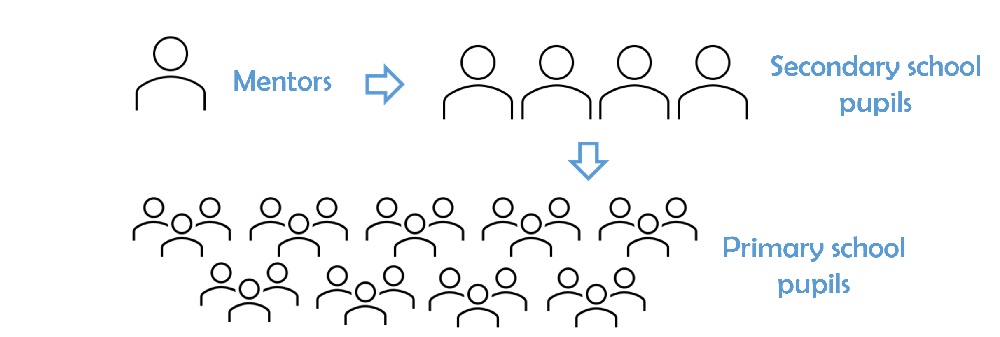

Mentor‑led Foundations
Scientists introduce real‑world science beyond the curriculum through talks and hands‑on workshops.
Science for the next generation
Leaders in Science is a long-term, cascade learning programme based on the idea that “those that teach, learn.”

Leaders in Science teams up practicing scientists (mentors) from academia or industry with local secondary school pupils studying science at Highers (Scotland) or A‑Level (England).
This starts with mentor-led workshops and transferable skills workshops, followed by school pupils designing and delivering their own science workshops to local primary school pupils. Find out more about the structure of Leaders in Science on the About page.
Leaders in Science is proudly supported by the Industrial Biotechnology Innovation Centre as part of its Skills Programme.
Scientists introduce real‑world science beyond the curriculum through talks and hands‑on workshops.
Students build presentation, teamwork and leadership skills through debates and practical sessions.
Senior pupils design and deliver their own workshops to local primary schools — learning by teaching.